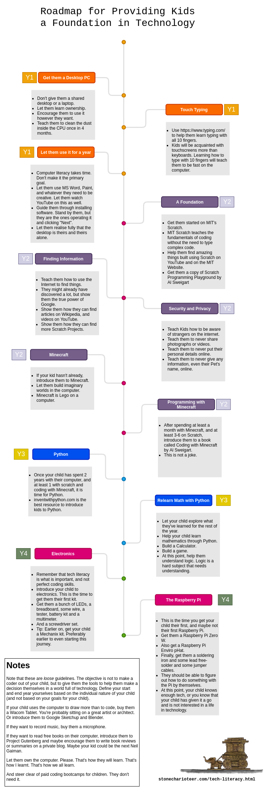

You have been seeing ads about kids learning how to code. Do you enroll them for these services?
I have been wondering about this for quite some time. I am someone who has been tech-literate (savvy) for most of my life. I have had a privileged start, since my parents saved money to buy me a desktop in 2003. It was dad’s hard-earned money, and owning it thoroughly led me learn more about computers and technology than school ever did.
In this post, I am going to outline my advice for bringing up a child solely with respect to educating them about technology.
What is Technology Literacy¶
This is not a generic article on “every kid should learn to code”. Instead, I am going to talk about tech-literacy.
You:
known how to use computers well.
This includes making technology choices, such as getting a new laptop, mobile phone or tablet.
Does not hanker after brands, choosing instead to assess technology well.
Can assess a new piece of technology well.
If you come across a technological marvel in your field, you have the innate understand to assess its worth for you, and whether learning it will help you improve your standard of living or work quality.
You choose to ignore buzzwords, fads and other pieces of technology that will come and go.
Can assess whether learning something new (technology/software related) might be good for you.
One example is that a majority of developers shy away from Excel. They choose to ignore how powerful a tool spreadsheets are.
You can also judge whether learning something in-depth in a particular domain is helpful for your career overall.
I know that my definition of this is not standard. Instead, I want to chart out a plan for a child who may be either home-schooled or taught computer-literacy outside of school.
Why Shouldn’t You Pay for Online Coding Classes?¶
A lot of people who are either not from the technical field or those who chose programming by happenstance or because it was in fashion, are probably thinking: why not put kids in an online coding school?
The best programmers out there are self-learners. They’re the kind who discover things on their own, learn to search the internet for solutions to their problems.
When do you start?¶
This is something I leave open-ended. Every child is a unique marvel. They’re not all the same. Do not treat a child’s disinterest in tech as a failing. They have other skills.
Coding is not the goal of this document. It never will be.
Roadmap¶

Feel free to share this roadmap wherever you can. If you feel like there’s something to add, please contact me over twitter and I’ll consider it.
Steps to Computer-Literacy¶
Step 0: The Goal is to not enforce Programming as a Career¶
Anything you enforce to a child, or to a teenager, will be poison to their ears. They will only mimic you as a preteen, so something you do for fun yourself will be fun for them. Know that the goal is not a career in programming. The Python job you may have missed out might not be relevant in 20 years. However just enable them to learn that computers are not boring.
Do not:
Compare their progress to another child.
Tell them that this will give them a career. Kids won’t care for it. Instead show them that computers can be fun.
Chide them telling them their ideas of being a TikTok/YouTube star are stupid. Instead:
Teach them that these platforms might not be there in the future.
If your child loves videogames, tell them that they can make videogames.
If your child loves movies/cartoons, tell them how much computers are used in these fields.
Step 1: Get them a Desktop Computer.¶
For YEAR 1 birthday, get them a desktop computer.
Not a Laptop. Not your desktop “when you’re not using it”. Not your Surface Book or iMac or whatever. Get them a good-old desktop. If you know how, assemble one yourself, or get one from a local shop. Again, do not get them something with store-provided service. Get them a CPU, a keyboard, a mouse and a monitor. Let them own this machine.
Again: Let them own this machine. They are the only ones who use it. They are the only ones who can fix it. If something happens, they use Google, or take it to a local repair guy (only the first time if necessary), and they figure out how to fix it.
No, seriously. This machine is theirs. It is like getting them a dog to teach them responsibility, but instead of you taking them for walks, this machine is all theirs. They will do whatever with it. Teach them to get what they want for it.
Step 2: Point them to Typing Tutorials. Let them learn 10 finger typing.¶
I have typed with two fingers most of my life. But in 2019, I spent 2 months teaching myself how to type with all my fingers. I was able to make the shift, thanks to a couple of resources and a few slow months when I was between jobs, and I am back to my normal speed of 70-80 WPM now. That doesn’t matter, but what matters is that your child treats typing like a game. You are not going to make a coder out of someone who has to find the semi-colon key on their keyboard. Not easily at least.
There are plenty of typing games, I’ve linked to a couple here. Or they can install some typing software and learn how to do it. Give them incentives to type everyday. If they like to read, they can digitize their favourite book by typing everyday.
This will teach them to not fear the computer, and to become really good at a skill many of their peers take for granted. Plus, when they get to coding, they will not find the typing to be a pain.
Step 3: Let Them Use It For A Year¶
For a year, leave them to it. Remember, if you try to tell them that the neighbour’s kid is learning Python at age 6 and writing their first app at age 7 while earning 1 Million USD a year, they will hate every minute of it. Instead, let them come to you six days later and show you minesweeper. Let them have fun cheating on homework with the calculator.
The computer is theirs. Let them break it. Leave them to it for a year. Even if your child is the next Alan Turing. Actually, especially if you think your child is the next Alan Turing.
Step 4: A Foundation¶
Get them started on MIT’s scratch program. Al Sweigart’s book: The Scratch Programming Playground is a great resource. This platform will teach them how to learn coding while being accessible and fun. Let them hunt around for interesting examples. If at any point they feel discouraged that what they’re making is not like what others have made, remember to tell them how amazing you find their work.
Imposter’s syndrome hits programmers, experienced and novice alike.
Step 5: Finding Information¶
Well into their second year as computer users, show them the power of Google. They would have used it by now, but show them that they can type “MIT Scratch youtube” into Google and get results. Though this seems intuitive, it is not. They will learn and then it will become intuitive. Let them find more resources to learn online. Or crazy games! Remember: zero judgement is key.
Step 6: Security and Privacy¶
Teach them that on the Internet, nothing is safe. Tell them why they should not upload their pictures anywhere (neither should you). Make them aware of the dangers of the internet. Teach them that they should not even enter your pet’s information online. Keep them safe by monitoring (from a distance) what websites they use the most. You can block certain sites using modern routers.
Step 7: Minecraft¶
I’m assuming your child has played with LEGO in the past. Minecraft is just that, but it doesn’t burn that big a hole in your pocket, or hurt when you step on it.
Let them play minecraft. Seriously. Let them lose hours in the making of imaginary worlds. This is still YEAR 2. Let them keep going at it.
Step 8: Programming with Minecraft¶
WIP